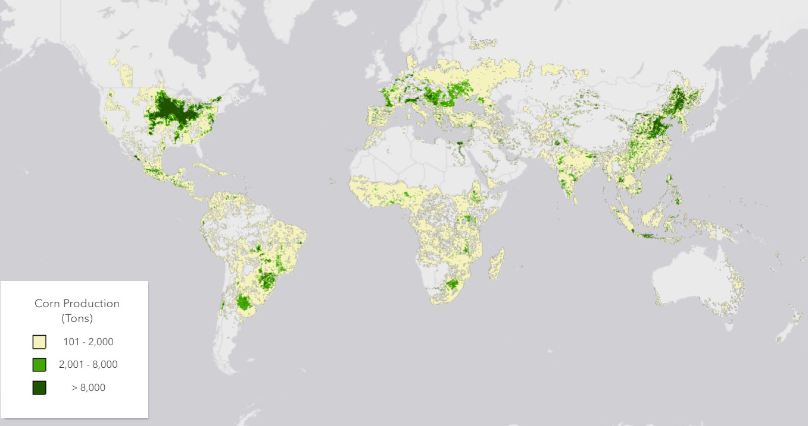
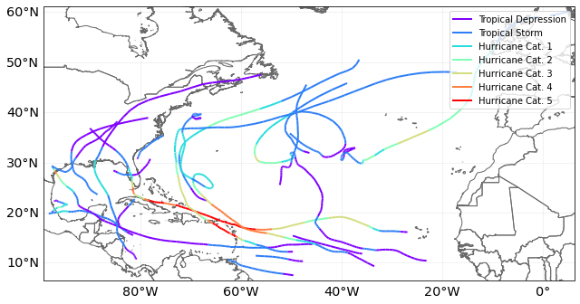

Is Physical Risk Priced in Commodities?
The distribution of production sources for commodities is crucial in understanding the exposure to physical risks. Different commodities have varying levels of vulnerability based on their production locations and methods. For instance, commodities produced in regions prone to extreme weather events or natural disasters may face higher physical risks.
For example, the map below shows the distribution of corn production in the world.

We can evaluate the physical risk exposure of commodities by analyzing their geographic distribution and the associated hazards. The following map illustrates a sample of tropical cyclone tracks, using CLIMADA.

To quantify the financial relevance of exposure to tropical cyclones, we follow a forward-looking methodology inspired by Brière et al. (2024). Specifically, we use the CLIMADA platform to simulate damages to commodity production assets based on both historical and synthetic tropical cyclone tracks.
Following Brière et al. (2024), we could generate 30 synthetic tracks for each historical cyclone in the IBTrACS archive, enabling a probabilistic assessment of expected damages. For each commodity, we overlay these cyclone tracks with the geographic distribution of production (e.g., corn, sugarcane, palm oil) and compute the Expected Annual Impact (EAI) — the average projected damage to physical production assets in a given climate scenario (e.g., RCP 4.5).
This risk exposure measure captures systematic climate-related shocks that are likely to affect the production of key commodities in cyclone-prone regions such as:
- Southeast Asia (palm oil, rice)
- Central America and the Caribbean (sugar, bananas)
- East Asia (aquaculture, rice)
- U.S. Gulf Coast (sugarcane, soy)
We could then use these risk metrics to build a physical risk factor portfolio, assigning higher weights to commodities with greater EAI. This portfolio is intended to capture the systematic component of physical risk from cyclones, and to test whether this risk is priced in commodity markets.
However, the findings in Brière et al. (2024) suggest that markets do not consistently price this risk. They find no significant premium associated with cyclone exposure over the period 2016–2022 — unless investor concerns about tropical cyclones are elevated.
To proxy for these concerns, they use:
- Google Search Volume Index (SVI) for "tropical cyclone"
- Monthly counts of cyclone events (EM-DAT)
When investor attention to cyclones is low, highly exposed firms tend to earn higher returns, consistent with compensation for bearing climate risk. But when attention is high, those same firms underperform, suggesting that investor sentiment and attention drive short-term return dynamics more than rational pricing of physical risks.